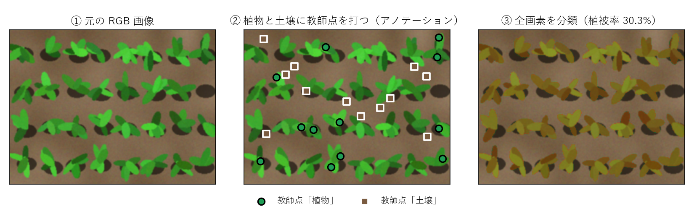
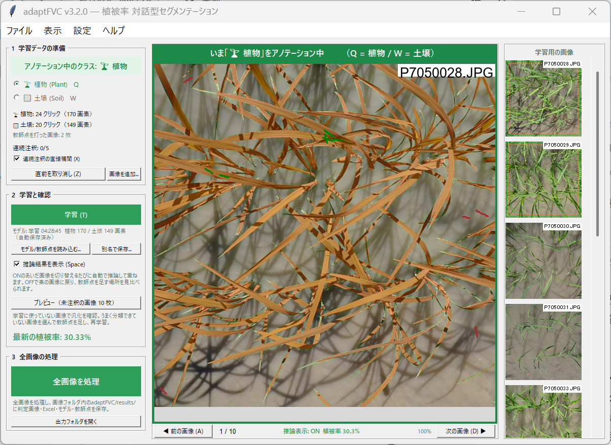
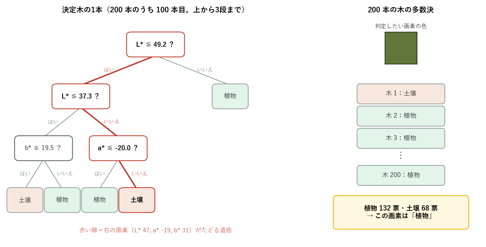
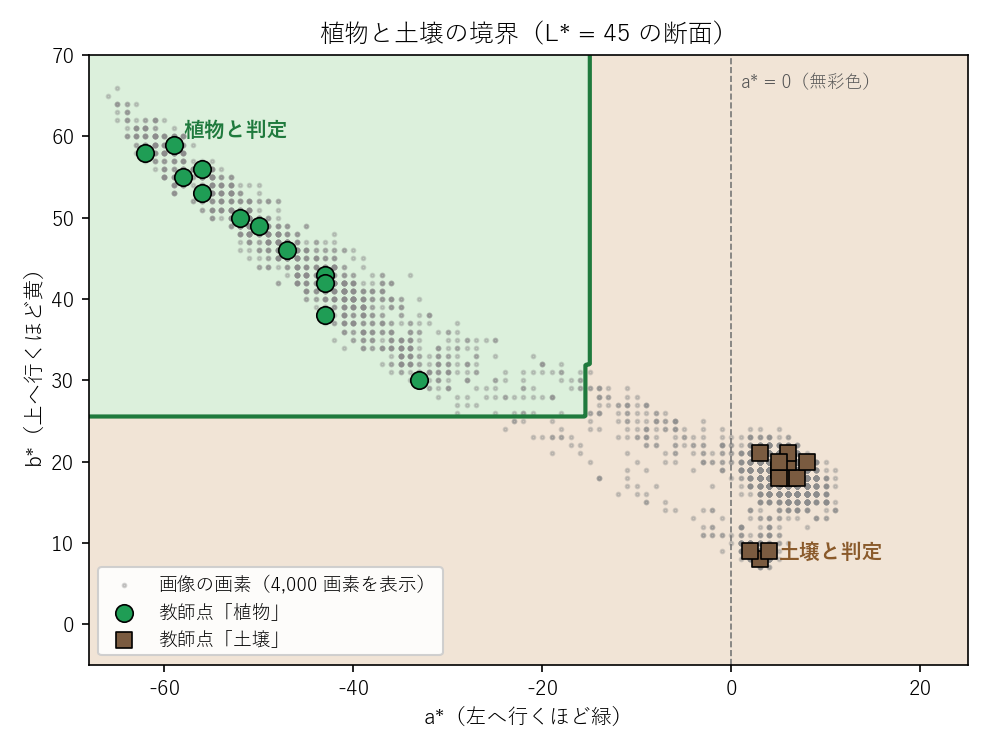
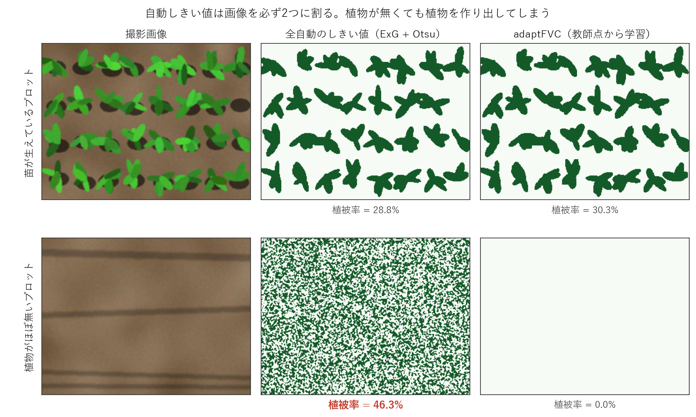

1. はじめに
第1部 使う
2. 使い方
3. 出力と自動保存
4. 結果を信じる前に
5. トラブルシューティング
6. ショートカット一覧
第2部 理解する・記録する
7. 植被率（FVC）とは何か
8. 原理
9. 設計の考え方
10. 再現性
11. 論文などで引用するとき
12. ミニ用語集
参考文献
adaptFVC は、圃場を撮影した画像から植被率を計算する Windows 用のアプリです。ドローンのオルソ画像から切り出した画像でも、地上から真上に向けて撮った写真でも使えます。フォルダ内の数百〜数千枚を一括で処理し、1枚ごとの植被率を Excel に出力します。インターネットへの通信は一切しません。
アプリは植被率を自動で計算しますが、その数字が正しいかを判断できるのは使う人だけです。
この説明書は2部に分かれています。第1部「使う」は操作の手順と結果の確かめ方、第2部「理解する・記録する」は植被率と判定の原理、設計の考え方、再現性と引用のしかたです。操作するだけなら、第1部を読めば足ります。

操作の手順、出力、結果の確かめ方、困ったときの対処。操作するだけなら、第1部を読めば足ります。
adaptFVC.exe を起動し、そのフォルダを選びます（2.2節）。左パネルの3つの欄（「1 学習データの準備」→「2 学習と確認」→「3 全画像の処理」）を上から順に進めます。各欄の緑の大きなボタンが、その欄の主な操作です。モデルの読込・保存、画像の追加、出力フォルダを開く、も各欄の小さなボタンにあります。ほとんどの操作は左手のキー（第6章）で行え、右手はマウスでクリックに専念できます。

1つのモデルが通用するのは、色の見え方が揃った画像セットの中だけです。同一圃場・同一日・同一カメラで撮った画像を1つのフォルダにまとめ、フォルダごとにモデルを作って処理してください。撮影日・圃場・カメラが変わったら、モデルを使い回さずに学習データを準備し直します。晴れと曇り、午前と夕方が混ざると、どこに教師点を足しても両立しないことがあります。どこでフォルダを分けるべきか分からなければ、プレビュー（2.5節）でどの画像の誤分類が目立つかを確かめると、明るさや撮影の時間帯による違いが見えてきます。対応する画像の形式は JPG・PNG・8bit TIFF です。
adaptFVC_v3.2.0_win64.zip を入手して展開し、adaptFVC.exe をダブルクリックします（インストールは不要。64 bit 版の Windows 用で、Windows 11 で動作を確認）。初回に「保護されました」と出たら、「詳細情報」→「実行」を押します（署名の無い配布アプリの警告）。| 選択肢 | 使いどころ | 植被率の差の目安* |
|---|---|---|
| 1024 px（推奨） | 精度優先。通常はこれ | 約 +0.2pt |
| 512 px | 速度と精度のバランス。処理が遅いとき | 約 +0.7pt |
| 256 px | 速度優先。幼苗・細い葉では非推奨 | 1pt 超になりうる |
左上の欄に、クラスごとのクリック数と、連続注釈で登録された画素数が表示されます（例: 「植物: 24 クリック（170 画素）」）。目安はクリック数で示します。
| 状況 | 画像の枚数 | 1枚あたり（各クラス） | 合計（各クラス） |
|---|---|---|---|
| まず動かしてみる | 3〜5 枚 | 5 クリック | 15〜25 クリック |
| 標準（晴天オルソなど） | 10 枚前後 | 5 クリック | 約 50 クリック |
| 条件が複雑（影・水面・枯れ葉） | 必要なだけ | ― | 100 クリック程度まで。それでも直らなければフォルダを分ける（2.1節） |
プレビュー（2.5節）で誤分類が見つからなくなったら十分です。登録される画素数はクリック数の数倍〜数十倍になります（正常）。学習には各クラス 10 画素以上が必要です。
基本は「学習データの準備 → 学習 → 結果を目で確認 → うまく分類できていない箇所を中心に学習データを追加 → 再学習」の繰り返しです。通常は2〜3周で誤分類が目立たなくなります。
| 機能 | 対象 | 確かめられること |
|---|---|---|
| 推論表示（Space） | 表示中の画像（学習用の画像の列を A / D で切り替える） | 教師点を打った画像なら当てはまり（教師点のとおりに塗れているか）、打っていない画像なら汎化 |
| プレビュー（ボタン） | 学習用の画像の列に入っていない画像から無作為に最大 10 枚（ボタンの表記は「未注釈の画像」） | 汎化: 学習に用いていない画像でも正しいか |
教師点を打った画像で綺麗に塗れるのは当然です。本当の確認はプレビューで行います。「プレビュー」ボタンを押すと、別のウィンドウに判定画像が並びます。うまく分類できていない箇所が目立つ画像をクリックして選び（黄色の枠になる）、「学習用の画像に追加」を押すと、その画像が学習用の画像の列の一番下に加わり、教師点を打てるようになります。画像の総数が 10 枚以下のフォルダでは、全部が学習用の画像に入るのでプレビューは使えません。教師点を打っていない画像を推論表示で確かめてください。推論表示とプレビューの両方で判定が良好になってから、全画像の処理へ進みます。
フォルダ内の好きな画像を学習用の画像の列に加えるときは、左パネルの「画像を追加...」を使います。列から外すときは、サムネイルを右クリックして「学習用の画像から外す」を選びます（その画像に打った教師点は、学習に使われ続けます）。
「全画像を処理」ボタンを押すと、フォルダ内の全画像を並列処理します（数千枚でも数分）。結果は adaptFVC/results/run_<日時>/ に保存されます（中身は第3章）。学習のあとに教師点を足したり消したりしていると、処理の前に学習し直すかを聞かれます。「はい」を選ぶと、いまの教師点で学習し直してから処理します。
QGIS でオルソ画像から斜めのプロットを切り出すとき、nodata（データの無い領域）を透明にする設定で PNG または TIFF に書き出すと、四隅のプロットの外は透明になります。adaptFVC は、アルファ（透明度）が 128 未満の画素を透明とみなし、「存在しない画素」として扱います。
出力はすべて、画像フォルダの中に新しく作られる adaptFVC というフォルダに保存されます。元の画像は変更しません（このフォルダを消しても、元の画像は消えません）。保存はすべて自動で、保存の操作は要りません。
画像フォルダ/adaptFVC/ cache/ 縮小版キャッシュ models/ model_latest.pkl / annotations_latest.json / history/ results/run_<日時>/ 全画像の処理1回分（下の表）と overlays/（判定画像） previews/ プレビュー（使い捨て） logs/ 作業ログ（送信はされない）
| いつ | 何が保存されるか |
|---|---|
| 教師点を打つ・消すたび | models/annotations_latest.json |
| 学習するたび | models/model_latest.pkl と、教師点の履歴（models/history/） |
| 全画像を処理するたび | results/run_<日時>/ 一式（下の表） |
| results/run_<日時>/ のファイル | 中身 |
|---|---|
vegetation_coverage_<日時>.xlsx | 「結果」シートに画像ごとの植被率と有効画素率（「画像ファイル名」列は元の画像の名前）、「モデル情報」シートに学習の設定と、アプリ・ライブラリの版 |
annotations_<日時>.json | この処理に使ったモデルの教師点（人が読める形式）。ここからモデルを作り直せる（第10章） |
model_<日時>.pkl | 学習済みモデル。教師点・学習の設定・アプリと主なライブラリの版を同梱 |
overlays/ | 判定画像（判定結果を元の画像に半透明で重ねた画像。透明な部分はグレー） |
run_metadata.json | アプリ・Python・scikit-learn・numpy・OpenCV の版と OS、学習の設定（Random Forest、200 本、シード値 42、色空間 Lab）、縮小サイズ、画像数、処理日時 |
作業の再開と受け渡し: 同じフォルダを開き直すと、前回の教師点を復元するか聞かれます（学習のあとに教師点を変えていた場合は、その場で学習し直します）。作業を別の PC で再開するときや、共同作業者に渡すときは、「2 学習と確認」の「別名で保存」（モデルの .pkl と教師点の .json を並べて保存）と「モデル/教師点を読み込む」を使います。読み込むときは、いまの教師点を置き換えるか、追加するかを聞かれます。教師点は画像のファイル名で対応付けられ、教師点の .json だけを読み込んだ場合は、その場で学習します。
results/run_<日時>/overlays/ にあります（「出力フォルダを開く」ボタン）。| 症状 | 対処 |
|---|---|
| 影が「植物」になる | 影の中の土を「土壌」として打ち、再学習（2.4節） |
| 暗い画像だけ精度が悪い | 暗い画像にも教師点を打つ。改善しなければフォルダを分ける（2.1節） |
| 植物ゼロの画像に植被率が付く | 土のバリエーションを「土壌」として打つ（2.4節） |
| プロットの外が計算に入っている気がする | Excel の「有効画素率」を確認。100% なら透明部分が無いので、切り出し時に nodata を透明にする設定を確認（2.7節） |
| 「各クラスに 10 画素以上の教師点が必要です」と出る | どちらかのクラスの教師点が 10 画素に足りない。透明な画素に打った点は除外される（2.7節） |
| 「教師点から学習し直しました」と出る | 正常。scikit-learn の版が違う環境で保存されたモデルを、同梱の教師点から作り直している（第10章） |
| 前回の教師点を復元したい | 同じフォルダを開けば聞かれる（第3章）。復元を断ったあとに教師点を打つと、自動保存の教師点は上書きされる。そのときは models/history/ にある学習ごとの記録を「モデル/教師点を読み込む」で選ぶ |
| 最初からやり直したい | メニュー「設定」→「リセット...」。教師点を削除すると、自動保存の教師点も空になる（学習ごとの記録は models/history/ に残る） |
| Windows で「保護されました」 | 「詳細情報」→「実行」（2.2節） |
| 処理が遅い | 縮小サイズを小さくする（2.2節。ただし同じ試験の中では揃える）。ノート PC は電源につなぐ |
問い合わせるとき: 作業ログは adaptFVC/logs/ に自動で残ります（送信はされません）。作成者にアプリの使用感を相談いただく場合や、不具合を報告いただく場合は、このログを添えていただけると助かります。ログには、画像フォルダの名前と画像のファイル名が含まれます。
| キー | 動作 |
|---|---|
| クリック | 教師点を打つ（連続注釈が ON なら、同じクラスで続けると直線補間） |
| Q | 植物をアノテーション |
| W | 土壌をアノテーション |
| Z | 表示中の画像で、直前のクリックを取り消し |
| X | 連続注釈 ON/OFF |
| T | 学習 |
| Space | 推論結果の表示 ON/OFF（ON のあいだは画像切替で自動推論） |
| A / D（← / →） | 前の画像 / 次の画像 |
| ホイール | ズーム。中ボタン（右ボタン）ドラッグで移動 |
植被率と判定の原理、設計の考え方、再現性、論文での引用のしかた。方法を人に説明するときや、論文の方法の節を書くときに読んでください。
作物が育つほど葉が広がり地面を覆うので、植被率は「どれだけ育ったか」を刈り取らずに数字にできる指標です。同じ場所を毎週撮れば成長の速さが、品種ごとに比べれば生育差が分かります。また作物学では、群落を上から撮影した写真から植被率を求め、群落が日射を受け止める割合（受光率）の代わりに用いることもあります（白岩ら 2011）。
ただし植被率は「上から見える緑の割合」であって植物の量そのものではありません。葉が重なるようになると、量が増えても 100% で頭打ちになります。どんな指標にも測れる範囲があることを覚えておいてください。
入力は普通のカラー写真（RGB 画像）です。画像はピクセル（画素）の集まりで、1画素は R・G・B の3つの数値（各 0〜255）を持ちます。
「有効な」とは、画像の一部が透明（プロットの外など）なら、そこを分母にも分子にも入れないという意味です（2.7節）。普通の写真では全画素が有効です。
つまり本当の問題は割り算ではなく、各画素が植物か土壌かを見分けることです。画素が持っているのは色の数値だけで、どれが「植物」でどれが「土壌」かは、そのままでは決まりません。色の数値から「植物」か「土壌」かに振り分けることを2クラス分類と呼び、adaptFVC はこれを全画素に対して行います。ここでいう「土壌」は、緑の植物以外のすべて（土・石・枯れ葉・影など）を指します。
adaptFVC は RGB を CIELAB（Lab）色空間に変換してから分類します。
| 成分 | 意味 |
|---|---|
| L* | 明るさ（0=黒 〜 100=白） |
| a* | 緑 ↔ 赤（小さいほど緑。0 が無彩色） |
| b* | 青 ↔ 黄（大きいほど黄。0 が無彩色） |
晴れと曇りで明るさ（L*）は大きく変わりますが、葉の「緑さ」（a*）は比較的保たれます。分けたい性質が特定の軸に集まる座標系を選ぶと分類は簡単になります。色空間は Lab に固定してあり、誰が使っても同じ条件で計算されます。
Lab のどこからが「植物」かは画像セットごとに違うので、その画像セットの中で人が見本を示します。植物の画素と土壌の画素をクリックして「この画素は植物」「この画素は土壌」というラベルを付ける作業がアノテーション（学習データの作成）で、ラベルを付けた画素を教師点と呼びます。1回のクリックで登録される教師点は1画素以上です（連続注釈では線上の画素すべて。2.3節）。本書では、操作の量をクリック数、学習に使われる量を画素数で数えます。
アプリは教師点から Random Forest で、植物と土壌を分ける境界を学習します。Random Forest は、「明るさ L* が 49 以下か？」「a* が −20 以下か？」のような単純な質問を枝分かれ状に重ねて答えを出す決定木を 200 本作り、その多数決で分類します（図3）。1本1本の木は粗くても、多数決にすると判定が安定します。こうして色空間の中に境界ができれば（図4）、あとは全画素を機械的に振り分けるだけです。学習したモデルで画素を植物と土壌に振り分けることを推論と呼びます。人が少数の見本を与え、機械がルールを学び、大量のデータに適用する。これが教師あり学習の最も基本的な形です。


見本からの学習を経ずに境界を全自動で決める方法の代表が、植生指数 ExG を使った Otsu の二値化（ExG + Otsu）です。ExG（2G−R−B）で「緑の強さ」を1つの数値にし、Otsu 法でしきい値を画像ごとに自動で決めて2つに割ります。手軽で多くの場面で動きますが、ルールが単純なぶん、次の2つの限界があります。

adaptFVC は、Lab の3つの値を使い、人が示した見本から「この画像セットでは植物と土壌はこう見える」を学びます。判断の材料が多く、植物の見た目を見本として知っているので、この2つの限界を補えます。撮影日・圃場・カメラ・生育段階が変われば「緑」の見え方も変わるので、モデルは画像セットごとに作ります（2.1節）。見本に合わせてモデルを画像セットに適応（adapt）させる。これが名前の由来です。また、最後は必ず人の目で結果を確かめる（第4章）ので、学習と確認を人が繰り返す前提で設計しています（2.5節）。
機械学習は、データからルールを学ぶ手法の総称です。adaptFVC の Random Forest は、人が決めた特徴（ここでは Lab の3つの値）からルールを学ぶ、古典的な機械学習の手法です。深層学習は機械学習の一種で、多層のニューラルネットワークを使い、色だけでなく葉の形や模様といった特徴も画像から自ら学びます。表現力が高い一方で、次の理由から adaptFVC では採用していません。
そこで adaptFVC は、狭い範囲の画像セットごとに数分で学習データを準備し、軽量なモデルを作ります（2.1節）。モデルは使い捨てでよい、という考え方です。これは深層学習が不要という意味ではなく、「計測の道具として今日確実に動くのは何か」という判断です。
adaptFVC のモデルは教師点から作られます。学習に使う Random Forest は乱数のシード値を固定しているので、同じ画像に打った同じ教師点からは、縮小サイズ、アプリの版、scikit-learn（adaptFVC が内部で使う機械学習のライブラリ）の版がすべて同じなら、何度学習しても同じモデルができます。つまり、教師点の JSON ファイル（第3章）と元の画像が残っていれば、この条件のもとでモデルを作り直せます。作り直すには、同じ画像フォルダを開き、「モデル/教師点を読み込む」で教師点の JSON を選びます（その場で学習します）。全画像の処理のたびに結果フォルダへ保存される JSON は、その処理に使ったモデルの教師点です。
2つの結果が同じモデルによるものか確かめるには: 両方の run_metadata.json で、アプリの版・scikit-learn の版・学習の設定・縮小サイズが一致し、教師点の JSON と教師点を打った画像が同じであれば、同じモデルです。保存したモデルを「モデル/教師点を読み込む」で読み込んだとき、scikit-learn の版などが違ってそのまま使えなければ、アプリが同梱の教師点から自動で学習し直し、そのことを表示します。
adaptFVC で計算した植被率を論文などで使うときは、ソフトウェアとして引用してください。GitHub のリポジトリ（github.com/KotaNakajima/adaptFVC）のページ右側にある「Cite this repository」から、APA 形式や BibTeX 形式の引用文をコピーできます。リリースごとに付く DOI は、取得後にこの章とリポジトリに記載します。
方法の節には、少なくとも次を書くと、他の人が同じ計算をたどれます。
run_metadata.json に記録）結果を再現できるように、教師点のファイル（結果フォルダの annotations_<日時>.json）を補足資料として公開してください。このファイルから同じモデルを作り直せます（第10章）。
書き方の例（数値は例）: 「植被率は adaptFVC v3.2.0 で算出した。画像を長辺 1024 px に縮小し、撮影日ごとに植物と土壌の教師点を与えてモデルを作った（教師点のファイルは補足資料 S1）。各画素の CIELAB 値を特徴量とし、Random Forest（Breiman 2001。決定木 200 本、乱数のシード値 42、scikit-learn 1.8.0）で全画素を植物と土壌に分類した。」比較に ExG（Woebbecke ら 1995）と Otsu 法（Otsu 1979）を使う場合の原典も、参考文献に挙げました。
| 用語 | 意味 |
|---|---|
| 植被率（FVC） | 真上から見た画像で、緑の植物が覆う面積の割合（%） |
| ピクセル（画素） | 画像を構成する最小の点。RGB の3つの数値を持つ |
| アルファ（透明度） | 画素の4つ目の数値で、不透明度を表す（0＝完全に透明、255＝不透明）。adaptFVC はアルファが 128 未満の画素をプロットの外とみなし、計算から除く |
| 色空間 | 色を数値の組で表す座標系（RGB、Lab など） |
| アノテーション | 画素に「植物」「土壌」の正解ラベルを付ける作業。学習データの作成にあたる |
| 教師点 | アノテーションでラベルを付けた画素。モデルはこれから学習する |
| 機械学習 | データからルールを学ぶ手法の総称 |
| 教師あり学習 | 機械学習の手法の区分のひとつ。人が与えた正解例からルールを学ぶ |
| 深層学習 | 機械学習の一種。多層のニューラルネットワークで、色だけでなく形や模様などの特徴も画像から学ぶ |
| 決定木 | 「〜以下か？」という質問を枝分かれ状に重ねて答えを出す仕組み（図3） |
| Random Forest | 多数の決定木の多数決で分類する手法。木を作るときの乱数をシード値で固定しているので、同じ教師点からは何度学習しても同じモデルができる（条件は第10章） |
| 推論 | 学習したモデルで、画素を植物と土壌に振り分けること |
| 乱数のシード値 | 乱数の出方を決める初期値。同じ値なら毎回同じ乱数の列になる |
| Otsu 法 | 画素の値（adaptFVC の比較では ExG の値）のヒストグラムから、2つのグループの分かれ目になるしきい値を自動で決める方法。必ず2つに割る |
| 判定画像 | 判定結果を元の画像に半透明で重ねた確認用の画像（結果フォルダの overlays/） |
| プロット | 試験区。圃場の中で区切った1区画 |
| セグメンテーション | 画像を画素単位で領域（ここでは植物と土壌）に分けること |
Breiman, L. (2001) Random forests. Machine Learning 45(1): 5–32. https://doi.org/10.1023/A:1010933404324
Otsu, N. (1979) A threshold selection method from gray-level histograms. IEEE Transactions on Systems, Man, and Cybernetics 9(1): 62–66. https://doi.org/10.1109/TSMC.1979.4310076
白岩立彦・川崎洋平・本間香貴（2011）作物群落の日射利用効率の推定．日本作物学会紀事 80(3): 360–364．https://doi.org/10.1626/jcs.80.360
Woebbecke, D. M., Meyer, G. E., Von Bargen, K. and Mortensen, D. A. (1995) Color indices for weed identification under various soil, residue, and lighting conditions. Transactions of the ASAE 38(1): 259–269. https://doi.org/10.13031/2013.27838